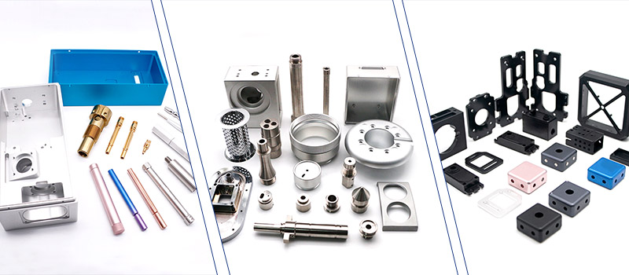
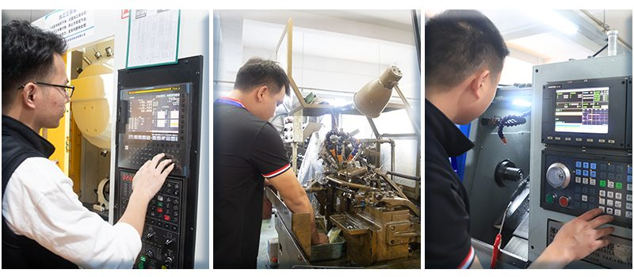

面对客户对产品的紧急需求，我们意识到目前的cnc加工交期排程可能存在过长的问题，这直接影响了客户组装环节的工作进度和效率。为了解决这一挑战，我们需要优化交期排程策略，确保能够及时完成生产并满足客户的需求，同时降低等待成本的影响。
问题分析： 当前cnc加工交期排程导致客户组装环节无法及时获取所需产品，延误了整体生产进度，增加了客户等待成本和客户不满的风险。
解决方法：
优化交期评估流程： 审查并优化交期评估的流程和标准，确保能够客观准确地评估cnc加工生产周期和交付时间。
准确预估生产时间： 基于历史数据和实际生产能力，制定更为合理的cnc加工生产排程，避免过长的交期设置。

问题分析： 缺乏有效的生产计划和调度安排，导致交期排程不合理，无法有效应对客户紧急需求。
解决方法：
优化生产资源利用： 确保生产设备和人力资源的最优配置，提高生产效率和响应速度。
灵活调度安排： 根据实际情况调整生产调度，确保关键订单能够优先处理，减少交期延误的风险。
问题分析： 跨部门沟通不畅可能导致信息传递延误，影响cnc加工生产计划的及时调整和执行。
解决方法：
建立跨部门沟通机制： 设立定期会议或沟通渠道，确保各部门间信息的及时共享和理解。
提升协作效率： 加强团队间的协作和配合，共同应对紧急订单和交期挑战。

问题分析： 面对突发的紧急订单，缺乏有效的紧急处理机制可能导致生产能力无法及时释放，影响客户满意度。
解决方法：
设立紧急订单处理流程： 制定详细的紧急订单处理流程和优先级规定，确保在保证质量的前提下尽快完成生产。
资源优先分配： 紧急订单优先分配生产资源，确保能够按时完成交付，减少等待成本和客户不满。
通过优化交期排程策略，强化cnc加工生产计划与调度管理，加强跨部门沟通与协作，以及实施紧急订单处理机制，我们将能够有效降低等待成本的影响，提升生产效率和客户满意度。这些措施不仅有助于解决当前的交期排程问题，还为未来的cnc加工生产运营提供了更为稳定和高效的管理模式。

 全国服务热线
全国服务热线